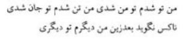

Şems hazretleri Konya’ya 23 Ekim 1244 Cumartesi sabahı gelmişti. Mevlânâ ile buluşmaları hakkındaki çeşitli rivayetleri bir tarafa bırakarak Mevlânâ’nın Şems’in etkisi altında kalışı üzerinde düşünelim. Mevlânâ’nın büyük oğlu Sultan Veled, İbtidâ-nâme adlı eserinde, “Mevlânâ, Şems’in nûrlu yüzünü görünce birçok sırlar ona açıldı. Adeta Şems’in yüzünün nûrunda yok oldu.” diye yazmaktadır. Şems de hiçbir velide bulamadığını Mevlânâ’da bulunca, iki mânâ denizi birleşti.
Bu yakınlıkta, bu dostlukta, bu ilâhî sevgide, “Kim, kime mürşit oldu? Kim müritti?” diye üstünlük iddia edilemez. Fark gözetilemez.
Emir Hüsrev-i Dihlevî’nin şu beyti bu iki Hak âşığının durumlarını tavsif etmektedir:

“Ben, sen oldum, sen de ben oldun. Ben, ten oldum; sen, can oldun. Artık bundan sonra kimse, ‘Ben ayrıyım, sen ayrısın.’ diyemez.”
Bu iki büyük velinin buluşmaları ve birbirlerini Hak dostu olarak sevmeleri, “Mü’min, mü’minin aynasıdır.” hadisinin sırrına ererek birbirlerine ayna olmaları, birbirlerinin gerçek hüviyetlerini görmeleri, etrafta bulunanlar tarafından iyi karşılanmıyordu. Mevlânâ’nın öğrencileri, müritleri, ileri gelen imamlar, din adamları hatta ailesinin fertleri, Mevlânâ’yı bu kadar tesiri altında bırakan Şems’teki hakikati, aşk ve îman gücünü göremedikleri, sezemedikleri için Tebrizliye nefret gözü ile bakıyorlardı.
Mevlânâ’nın zevcesi Kira Hatun, Şems gelmeden önce Mevlânâ’nın adam boyundaki bir çerağ altında, tan yeri ağarıncaya kadar babası Bahaeddin Veled’in Maârif adlı eserini okuduğunu rivayet etmekte idi. Halbuki Şems, Mevlânâ’ya hem babasının kitabını okutmuyor hem de Mevlânâ’nın pek sevdiği Mütenebbî Divanı’nı, daha başka kitapları okumasına müsaade etmiyordu.
Çünkü Şems, unutulacak, insana yük olacak, insanın benliğine benlik katacak bilgiye değil, gönül bilgisine, feyz ve cezbeye ehemmiyet veriyordu. “Gönül bilgisi kitaplardan öğrenilmez. İnsan altı bin sene yaşasa, altı kere Nuh ömrüne sahip olsa, yüz binlerce yıl içinde çalışarak elde edilen şey, bir an Allah’la beraber olmak yüzünden elde edilen feyz ile bir olamaz.” diyordu (Makâlât, Fatih nüshası 141). Böylece o, sohbeti ve Hakk’ın cezbesini esas tutuyor, bilginin bir gaye olmayıp hakikati anlamada, Hakk’ı idrakte aczimizi ortaya koyduğunu söylüyordu. Bu sebeple Şems, Mevlânâ’yı çok sevdiği şeyhlerden ayırarak zaten yakın olduğu Hakk’a, onu daha çok yaklaştırmak istiyordu.
Çoğu zamanlar medresenin cemaat hanesinde, kitap okumakla meşgul olan Mevlânâ’yı mütalâadan men ediyordu. Hatta onu, herkesle görüştürmüyordu. Bazen medresenin kapısına oturuyor, Mevlânâ’yı görmek isteyenlere, “Niyaz olarak, şükrâne olarak ne getirdin? Onu gösterin de Mevlânâ’yı size göstereyim.” diyordu. Bir gün birisi, bu garip adama kızarak, “Sen ne getirdin ki, bizden onu istiyorsun!” deyince Şems, “Ben, kendimi getirdim, başımı onun yoluna feda ettim.” demişti.
Şems’in Mevlânâ’ya bu kadar yakın oluşu, onu tesiri altına alışını İbtidâ-nâme’de Sultan Veled şöyle anlatmaktadır:
“Halk bu bağlılığı, bu vefayı, bu coşkunluğu, bu sevgiyi görünce hasede düştü. Herkes kınamaya koyuldu. Şeyhler, büyükler, yüce kişiler, ‘Bu adam ne biçim bir adamdır ki Mevlânâ’yı bu hâle getirdi. Hiçbirimiz onda bir hayır görmediğimiz hâlde Mevlânâ neden onu böyle üstün bir adam olarak tutmada, ağırlamada? Onda ne hâl var, ne ilim var! Ona, nazar ehli dememize, gönül gözünün açık olduğuna hükmetmemize imkân var mı?’ diye açıkça onun hakkında dedikodu yapmaya başladılar.”
Şems işin çığırından çıktığını, herkesin kendisine düşman olduğunu görünce, bir gün ansızın kayboluverdi. Şems, 643 yılının Şevvalinin 21. Perşembe günü Konya’yı terk etmişti (15 Şubat 1246). Şems, Konya’da tam on beş ay, yirmi beş gün kalmıştı.